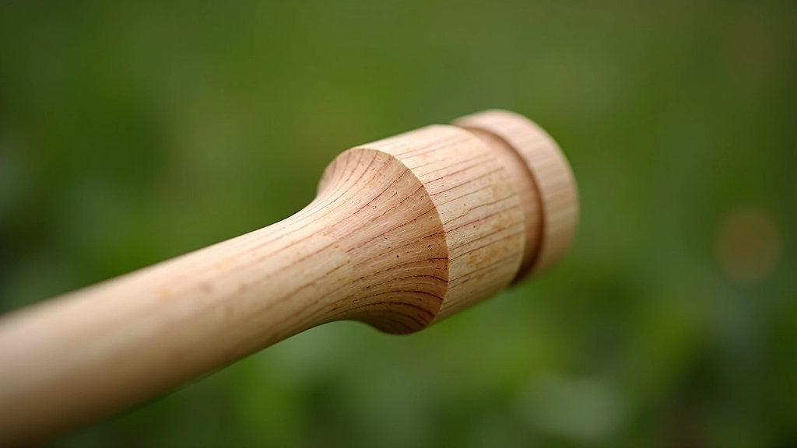
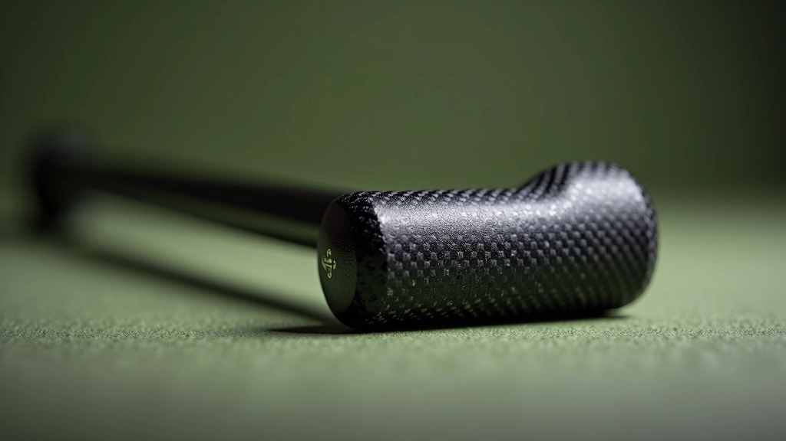

أوزان مطارق الكروكيه: ما الفرق الفعلي؟
شرح تفصيلي لأوزان المطارق المختلفة من 680 إلى 1000 جرام وتأثير كل منها على قوتك وسيطرتك.
مقارنة شاملة بين المقابض الخشبية التقليدية والمقابض المركبة الحديثة ومميزات كل منها

المقبض هو النقطة الوحيدة التي تربطك بمطرقتك. إنه يؤثر على كل شيء — من كيفية تحكمك بالقوة إلى شعورك بالراحة بعد ساعات من اللعب. لا تتجاهله.
هناك نوعان رئيسيان يهيمنان على السوق الآن: المقابض الخشبية التقليدية التي استُخدمت لعقود، والمقابض المركبة الحديثة التي بدأت تغير قواعد اللعبة. كل منهما له نقاط قوته والعيوب الخاصة به.
الخيار الموثوق الذي ثبتت فعاليته على مدى أجيال من اللاعبين.
تقنية متقدمة توفر أداء محسّن وراحة أكبر في جلسات اللعب الطويلة.
الخشب هو المعيار منذ بداية رياضة الكروكيه. تُصنع هذه المقابض عادة من أنواع خشب صلبة مثل الرماد والجوز والبلوط. لماذا؟ لأن هذه الأخشاب توفر التوازن المثالي بين الوزن والمرونة والمتانة.
الميزة الحقيقية للخشب هي الإحساس. يمكنك فعلاً أن تشعر بالكرة عندما تضربها. هناك رجع طفيف يساعدك على فهم قوتك. بعض اللاعبين — خاصة الخبراء — يقسمون بهذا الإحساس.


في السنوات الأخيرة، ظهرت مواد جديدة تماماً. الألياف الكربونية والبلاستيك المعزز والراتنج — كل هذا يُستخدم الآن في صناعة المقابض. هذه ليست مجرد تكنولوجيا للتكنولوجيا. إنها تحل مشاكل حقيقية.
المقابض المركبة أخف وزناً من نظيراتها الخشبية. تقاوم الرطوبة بشكل أفضل بكثير. لا تتطلب الزيت والصيانة المستمرة. وتوفر قبضة أفضل — خاصة عندما تتعرق يداك أثناء اللعب في الطقس الحار.
إذا كان ذلك ممكناً، احمل مطرقة خشبية ومركبة. لا تشتري بناءً على الصور فقط. الإحساس هو كل شيء.
المبتدئون يستفيدون من المركبات — أخف وأسهل في التحكم. اللاعبون المتقدمون قد يفضلون الخشب للإحساس الأفضل.
إذا لعبت في مناخ رطب أو حار، المركبات أفضل بكثير. الخشب قد يصبح انزلاقياً وعرضة للتشقق.
قد يكون الخشب أرخص في البداية، لكن المركب يوفر المال على الصيانة على المدى الطويل.

شرح تفصيلي لأوزان المطارق المختلفة من 680 إلى 1000 جرام وتأثير كل منها على قوتك وسيطرتك.

نصائح عملية لاختيار الوزن المناسب بناءً على قوتك البدنية والمسافات التي تريد تحقيقها.

إرشادات عملية لصيانة مطرقتك بشكل صحيح وإطالة عمرها والحفاظ على أدائها لسنوات طويلة.

فريق التحرير
كتبه فريق ملاعب الدقي التحريري، مكرس لتقديم إرشادات عملية وسهلة المتابعة عن رياضة الكروكيه.
لا يوجد "اختيار صحيح واحد" عندما يتعلق الأمر بنوع المقبض. الخشب والمركبات — كلاهما له مكانه. الخشب يعطيك التراث والإحساس. المركبات تعطيك الأداء والراحة.
السؤال الحقيقي هو: ما الذي تريده أنت من اللعبة؟ هل تريد الاتصال الحميم بالمطرقة؟ اختر الخشب. هل تريد أن تركز على اللعبة نفسها دون التفكير في الصيانة؟ المركبات هي طريقك.
المهم هو أن تختار ما يشعرك بالراحة. اختبرهما إن استطعت. ثم ابدأ باللعب. كل الباقي — سواء كان الخشب أو المركب — سيصبح طبيعياً مع الوقت.
هذا المقال يُقدم معلومات تعليمية عن أنواع المقابض المختلفة. الاختيار بين الخشب والمركبات يعتمد على احتياجاتك الشخصية وظروف اللعب الخاصة بك. نوصيك باختبار الخيارات المختلفة قبل الشراء. الخصائص والمميزات المذكورة تعكس التجارب العامة وقد تختلف بناءً على العلامات التجارية والنماذج المحددة.